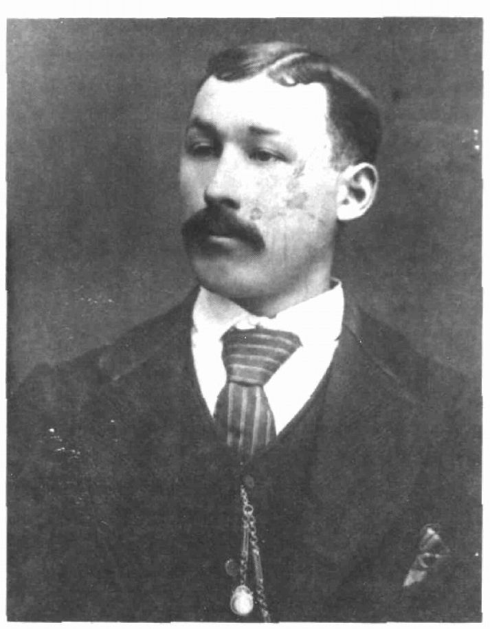

Son of John Kastl · John’s branch
Vaclav Kastl
1864–1932

What the book records
| Also written as | Wenzel, Wenzlp. 28 p. 29 |
|---|---|
| Born | 1864, Uboc, Bohemiap. 28 p. 29 |
| Married | Katerina Zelnichek, 21 May 1889, Plasip. 28 p. 29 |
| Emigrated | Aged 8, with his parents, arriving at Baltimore 14 August 1872 on the S.S. Baltimore; listed on the ship records as Wenzlp. 29 p. 28 |
| Died | 25 January 1932p. 28 p. 29 |
| Buried | Plasi, Nebraskap. 29As printed
|
Family
Parents
John Kastl 1835–1890 and Marie Kunes 1839–1934
Spouse
Katerina Zelnichek 1865–1936
Married 21 May 1889, Plasi p. 28 p. 29
Children
- Frank Kastl 1890–1891
- Mary Frances Kastl b. 1891
- Apolena M. Kastl 1893–1983
- Christina Kastl
- Josephine Kastl 1896–1971
- Joseph Kastl 1898–1976
- Mathilda Kastl b. 1901
- John Kastl b. 1903
- Leslie Kastl 1906–1984
- Martha H. Kastl 1908–1970